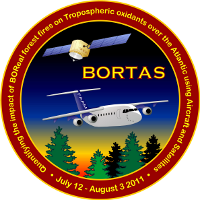

Here are some interesting websites - some academic some friends and some just cool stuff:
School of Geosciences

I am based at the School of Geosciences at the University of Edinburgh and this website will give you load of infomration about the diverse and successful school.
Palmer Group
The Palmer Group is a research group at The University of Edinburgh that I work for. It is headed by Prof. Paul Palmer and has a number of PhD students and post-docs doing reasearch on a diverse number of topics from atmospheric chemistry to modelling human migration to using Earth System models to help in the search for extra-terrestrial life.
BORTAS
Here you can find information about the BOReal forest fires on Tropospheric oxidants over the Atlantic using Aircraft and Satellites (or BORTAS for short). This is a collaborative field campaign looking at atmospheric chemistry downwind from forest fires. Most of my research is based on data collected during this campaign in 2011.
GEOS-Chem
Information about the GEOS-Chem chemistry transport model that I use can be found here. This website gives information about the model as well as the community that created, maintain and use GEOS-Chem from all over the world.
Dizem Bella

Dizem Bella is a nutritional rehabilitation centre and school in Karaga, northern Ghana. This website gives information about a charity campaign set up by some friends of mine thats ulitmate goal is to make the centre completely self-sufficient. Its a little charity that is a great example of how a simple idea have a massive effect on peoples lives.